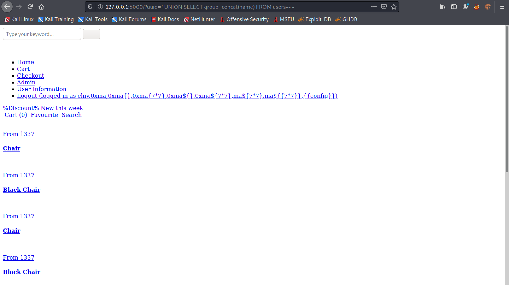

April 29, 2022
SQL Injection - Examle 4
In this tutorial, we will see how to perform a SQL injection attack by injecting our payload in the UUID which we will use to generate a Flask cookie using a leaked Flask secret. When the cookie is submitted to the web application, it tries to extract the UUID from the cookie and based on that UUID, it tries to obtain a username from the database. This tutorial provides more information about how we got the Flask secret key using a SSTI (Server-Side Template Injection) attack.
This is the main page for the website which allows us to add chairs to the cart.
Let's register a user.

It returns a UUID which we use to login to the website instead of using the username.
Once logged in we can purchase any furniture that we want by adding it to the cart. Let's click on "User Information" on the left panel to see what information it contains regarding the user.
This page contains only the username and UUID.
Let's copy the cookie and decode it to see what it contains.

The last part of the cookie (after the dot (.)) can't be decoded. But the part that is decoded shows that it contains the UUID and the items that we have added to the cart.

Let's click on a chair and add it to the cart.

Copy the cookie.

Base64 decoding the cookie shows that an item has been added to the cart. So this was a quick introduction to the functionality of the website.

Let's start the SQL injection attack. This is a simple Flask web server that acts as proxy between us and the target server. This proxy server will listen for a request and as soon as it receives a request, it pulls the UUID field from the GET request and then craft a new request with that particular UUID in the cookie.
Let's run the Flask server. We can see that it is listening on port 5000.
This is the main page of the website that we saw earlier. However, the styling doesn't work but it is fine because we don't need the CSS to work for this attack. Note that we include our UUID in the URL which is given to us when we register to the website.
Let's add a single quote after the UUID to see how the web application handles it.
Adding a single quote after the UUID breaks the server.
Adding a ' or 1=1-- - checks if 1 is equal to 1 (which it always is) and comments out the rest of the SQL query.
We can see that the error message is not displayed anymore.
Let's use a UNION injection technique to see if we can return anything back from the database.
We can see that the web application returns one column (because we don't see any errors) but we don't see "1" in the page.
Let's try to remove the UUID from the GET parameter.
We can see that after removing the UUID, 1 is displayed on the page.

Entering '0xma.com' in the UNION statement returns '0xma.com' in the page.
This SQL UNION injection returns a single database name from the database.

Since we are interested in returning all the database names, we use the GROUP_CONCAT() function.
The "shop" database seems to be interesting.
Let's see if we can return all the table names in the "shop" database.
We can see that it returns four tables: items, messages, support and users. The "users" table seems to be interesting.
Let's return all the column names in the "users" table.
The "users" table has some interesting columns: id, name, password and uuid.
Let's return all the values in the "UUID" column. Note that we use the GROUP_CONCAT() function so that it returns all the rows in the column. If we didn't include this function, then only the first row would have been returned back to us.
This returns all the rows in the "name" column.
The first user "chiv" seems to be interesting. Since it is the first user created in the table, it probably has administrative privileges.
Let's return the passwords in the "users table".

Since the first user in the table is "chiv", the first password in the table should also belong to this user.
We can use the CONCAT() function to concatenate two columns of the same table. Note that we are also separating each line with the <br> tags.
Now that we have manually performed a SQL injection and extracted the names and passwords from the "users" table, let's try to dump the contents of the "users" table using sqlmap.
If you liked reading this article, you can follow me on Twitter: mujtabareads.
- SQL Injection - Example 3
- SQL Injection - Example 2
- Cross-Site Scripting (XSS) Attack - Example 2
- Second Order SQL Injection - Example 2
- SQL Injection - Example 1
- XSS (Cross-Site Scripting) - Example 1
- Second Order SQL Injection - Example 1
- Server Side Template Injection (SSTI) - Example 1
- Node Cookie Deserialization Command Injection
- XXE Injection